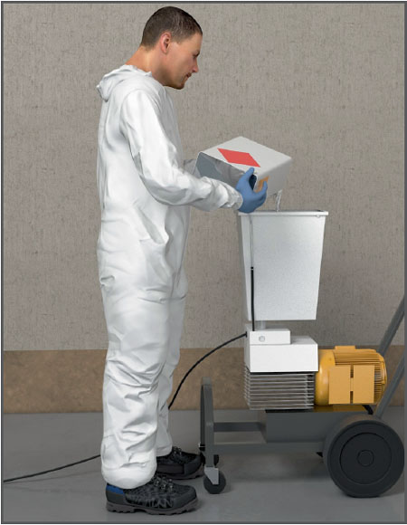

Gefährdungen
- Beim Umgang mit Farben und Lacken können Gesundheitsschäden durch Einatmen oder durch Hautkontakt auftreten.
Allgemeines
- Farben und Lacke (Beschichtungsstoffe) bestehen u. a. aus:
- Bindemitteln, Pigmenten (Farbmitteln) und Füllstoffen, Zusatzstoffen (Additiven), z. B. Konservierungsstoffen, Sikkativen oder Hautverhütungsmitteln, Netzmitteln, organischen Lösemitteln und/oder Wasser. Die meist ungefährlicheren wasserverdünnbaren Beschichtungsstoffe (Dispersionsfarben, Dispersionslackfarben) enthalten bis zu 10 % Lösemittel. Lösemittelverdünnbare Beschichtungsstoffe enthalten dagegen 30 – 70 % Lösemittel.
Schutzmaßnahmen
Hinweise beim Umgang mit alten Rostschutzanstrichen
- Für Rostschutzanstriche wurden häufig schwermetallhaltige Pigmente verwendet, die heute z. T. wegen ihrer Krebsgefährdung verboten sind. Hierzu gehören: Zinkchromat (Zinkgelb, Zitronengelb) und Strontium chromat (Strontiumgelb). Verwendet wurden vielfach auch bleihaltige Pigmente (z. B. Bleimennige).
- Vorsicht beim Entfernen alter Rostschutzanstriche. Staubarme Arbeitsverfahren anwenden. Atemschutz mit Partikelfilter P2 und Schutzanzüge Typ 5-6 benutzen.
Hinweise beim Umgang mit lösemittelverdünnbaren Beschichtungsstoffen und Verdünnungsmitteln
- Informationen zum Gesundheitsschutz und Betriebsanweisungsentwürfe sowie Angaben zu Schutzhandschuhen liefert der GISCODE für Beschichtungsstoffe im Gefahr stoffinformationssystem der BG BAU – WINGIS (www.wingis-online.de).
- Für ausreichende Lüftung sorgen. Soweit lüftungstechnische Maßnahmen nicht oder nicht ausreichend durchgeführt werden können, ist Atemschutz mit Gasfilter A2 zu benutzen.
- Bei Spritzverfahren Kombifilter A2-P2 verwenden.
- Hautschutz-, Hautreinigungs- und Hautpflegemittel benutzen.
- Beim Verarbeiten von leicht entzündlichen Beschichtungsstoffen
- Zündquellen vermeiden,
- Ex-geschützte Geräte verwenden,
- elektrostatische Erdung vorsehen.
Hinweise beim Umgang mit Epoxid-, Polyurethan- und Polyesterharzen
- Epoxidharze werden meist als 2-Komponenten-Produkte verwendet. Sie bestehen aus einer Epoxidharz- und einer Härterkomponente.
- Polyurethanharze können 1- oder 2-Komponenten-Produkte sein und enthalten Isocyanate, die – wie Epoxidharze – zu Allergien führen können.
- Ungesättigten Polyesterharzen wird Styrol zugegeben, wodurch eine Reaktion stattfindet. Styrol ist gesundheitsschädlich. Harz und Härter können Gesundheitsschäden verursachen.
- Harz und Härter nur nach Angaben des Herstellers mischen. Vorsicht bei unkontrollierter Reaktion beim Anmischen.
- Gebinde getrennt und geschlossen lagern.
- Geeignete persönliche Schutzausrüstung benutzen, z. B.:
- Atemschutz, je nach Konzentration Gasfilter Typ A oder B
- Schutzhandschuhe
- Schutzbrille
Beschäftigungsbeschränkungen
- Für Jugendliche, schwangere Frauen oder stillende Frauen sind Arbeiten mit bestimmten gesundheitsschädigenden Stoffen verboten. Einzelheiten sind der Gefahrstoffverordnung, dem Jugendarbeitsschutzgesetz und dem Mutterschutzgesetz zu entnehmen.
Arbeitsmedizinische Vorsorge
- Arbeitsmedizinische Vorsorge nach Ergebnis der Gefährdungsbeurteilung veranlassen (Pflichtvorsorge) oder anbieten (Angebotsvorsorge). Hierzu Beratung durch den Betriebsarzt.
07/2021